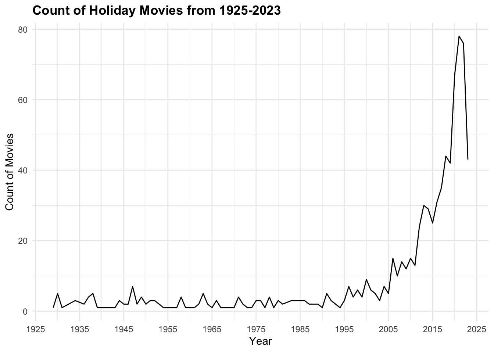
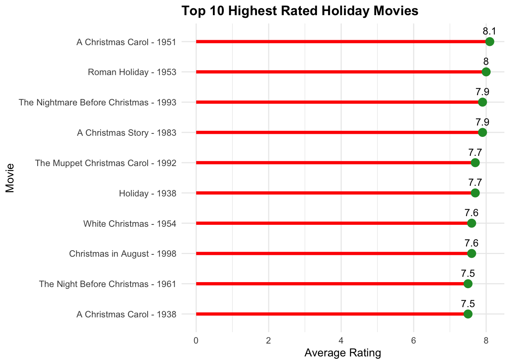
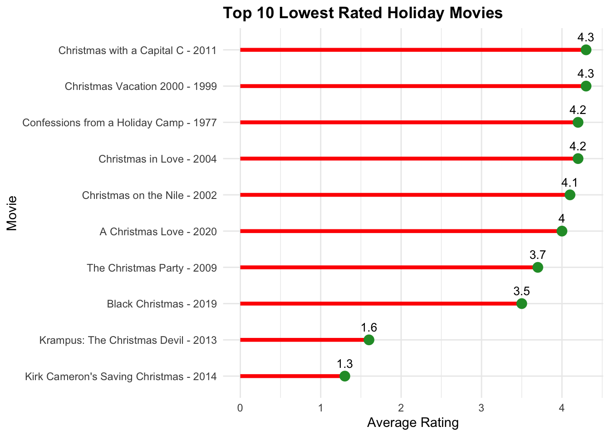

Holiday Movie Ratings
Introduction
Hello, welcome to my first blog post! Although it is February and the holidays are officially over, it is never too early to start researching the best holiday movies to watch when the holidays come next! In this blog post, I am going to be exploring a holiday movies data set from Tidy Tuesday’s post on December 12, 2023. This data set is from IMDb movie ratings and it has 800 observations (movies). Follow along as I explore which movies in the data set are rated the highest and which movies are rated the lowest. I will also be looking at whether or not holiday movies have become more popular over the past century.
https://github.com/rfordatascience/tidytuesday/blob/master/data/2023/2023-12-12/readme.md
The variables I will be investigating are:
| variables | description |
|---|---|
| primary_title | the title of the movie |
| runtime_minutes | how long the movie is in minutes |
| year | the year the movie was released |
| average_rating | the average rating of the movie out of 10 |
| num_votes | the number of votes a movie received |
Popularity of Holiday Movies
This line plot displays the number of holiday movies created over time from 1925 through 2023. It is clear from the plot that within the past two decades, the number of holiday movies have skyrocketed from less than 10 a year to close to 80. The year that made the most holiday movies seems to be 2021 with roughly 78. It is interesting how there is a dip after 2021 in the number of holiday movies made. In 2023, only 43 holiday movies were created. Are holiday movies losing popularity and on a downward trend for the future? We will not know the answer to that question for at least a few years, but it will interesting to follow and see if that happens.
Top 10 Highest Rated Holiday Movies

Which movies should you definitely add to your list to watch? Look no further! This lollipop plot displays the top ten highest rated holiday movies that received more than 1000 votes by users. With an average rating of 8.1, “A Christmas Carol” also known as “Scrooge” from 1951 is the top rated holiday movie. A close second with a rating of 8.0, is “Roman Holiday” from 1953. Interestingly enough, all of the movies that made the top ten are from the 20th century. My personal favorite is “White Christmas,” so I was happy to see that movie made the top ten.
Top 10 Lowest Rated Holiday Movies

This lollipop plot displays the top ten worst rated holiday movies that received more than 1000 votes. Be sure to avoid these movies as they received the lowest average ratings. The worst movie on the list is “Kirk Cameron’s Saving Christmas” from 2014 with an average rating of 1.3 out of 10.
Wrap-Up
In this blog post, the best and worst holiday movies were revealed along with a potentially alarming trend that holiday movies might be losing popularity in the coming years given the decrease in the number of movies made in 2023. Granted this decline in holiday movies might be due to the fact that there was a Writers Guild of America strike from May to September 2023 that halted film-making. However, we cannot be certain of this fact until we see how many holiday movies are created in 2024 and compare the numbers.
Nevertheless, I really enjoyed making this blog post and wrangling the data to create these three visualizations. I was limited to a lollipop plot for displaying the best and worst holiday movies because I only had one row that corresponded to a particular movie. In this case, I was given the average rating for a movie and I was not able to calculate the average rating myself given all the information from the votes. I wish I had the original raw data because I would have added error bars or done a boxplot to show the variability that exists within the data and the potential outliers. In class, we learned about the importance of displaying the variability and distribution shape in a visualization. I feel like displaying the variability in the data would have helped me better understand the data to see if any outliers are influencing the average rating. In light of this, I tried to make the lollipop plot clear and easy to interpret. I included text that displays the actual rating in addition to the scale on the x-axis because I think it helps with readability. I also decided to start the x-axis at 0 because average rating is a length variable. In class, we learned that when displaying length, the axis should start at 0. Additionally, I decided to use a line plot to show the trend in holiday movie counts over time because a line plot displays time-series the best.
Thanks for reading!